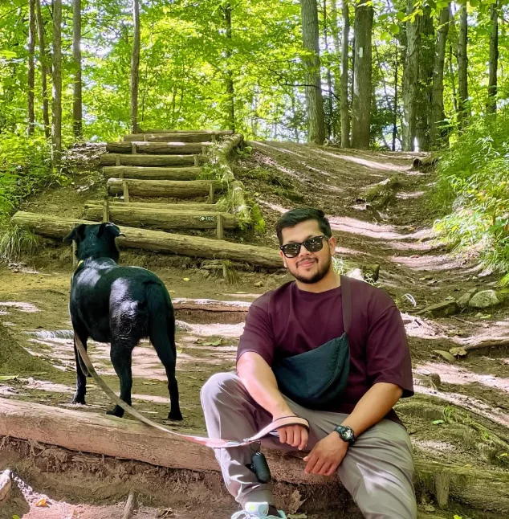
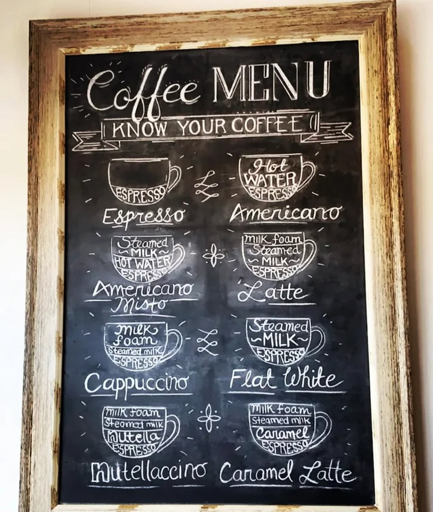
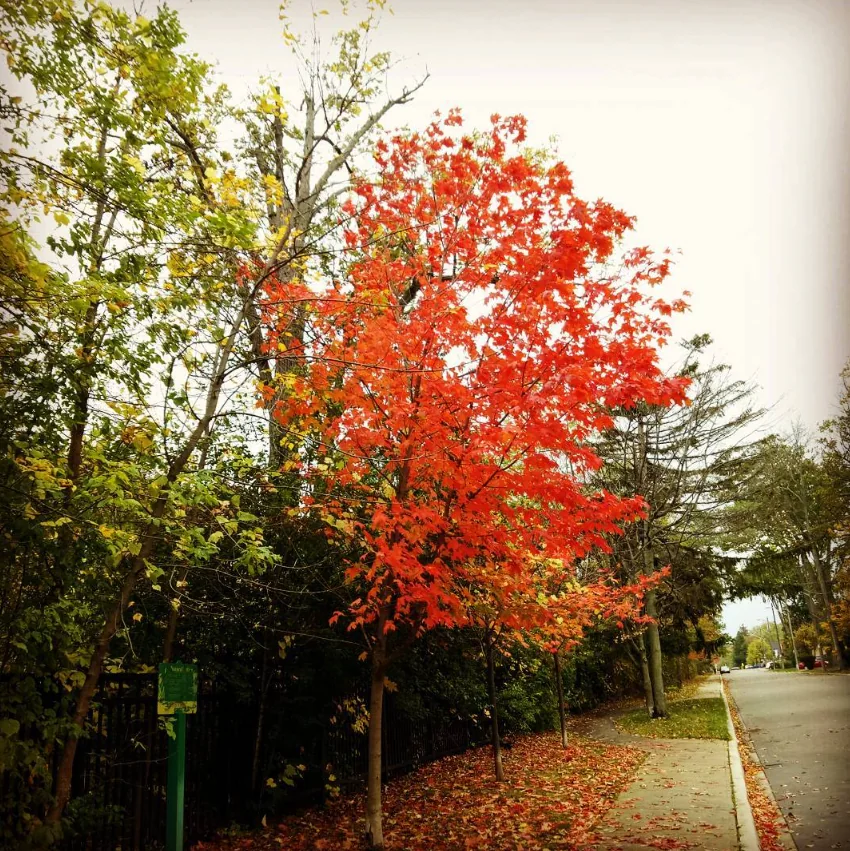

Vanshul
Rathore
I work at the intersection of business operations, commercial strategy, and technology—bringing a practical, analytical approach to improving processes and helping organizations operate effectively.
Explore my background ↓Technology roots.
Business leadership.
I have more than a decade of professional experience spanning enterprise technology and commercial business operations. At Omni Food Equipment, I progressed from an IT and communications role into management and ultimately Head of Business Operations.
My work has included international procurement, supplier relationships, inventory planning, logistics, pricing, e-commerce, and cross-functional operational coordination. Earlier in my career, I worked in enterprise technology supporting Oracle-based applications.
I value thoughtful analysis, practical execution, continuous improvement, and strong working relationships. I'm based in the Greater Toronto Area, Canada.
Where strategy meets execution.
Business Operations
Coordinating procurement, sales, logistics, finance, and marketing to support reliable day-to-day execution and long-term operational improvements.
International Procurement & Supplier Management
Planning overseas purchasing, negotiating with suppliers, and managing production timelines, pricing, and commercial terms.
Inventory Planning & Supply Chain
Forecasting demand, balancing stock availability with purchasing decisions, and coordinating container logistics and landed costs.
E-Commerce & Digital Commerce
Managing Shopify product operations, pricing, promotions, and digital customer experience alongside marketing and growth initiatives.
Process Improvement
Finding operational bottlenecks, improving workflows, and using technology and reporting to make teams more effective.
Commercial Strategy & Pricing
Supporting pricing decisions, planning, and operational forecasting with a focus on sustainable business performance.
A career at the intersection of technology and business.
Head of Business Operations
Leading cross-functional business operations spanning procurement, supplier management, pricing, inventory planning, logistics, e-commerce, and team coordination.
IT/Communications Manager
Managed purchasing and inventory planning, supported operational decisions, and coordinated supplier relationships, logistics, and commercial activities.
IT/Communication Coordinator
Supported Shopify product content, pricing, digital marketing, communications, and internal systems.
Sales & Marketing Representative
Worked across customer engagement, marketing processes, and CRM improvements.
Senior Analyst
Supported enterprise technology and Oracle-based applications for international clients.
A little more
about me.
There's more to life than job titles and spreadsheets. Outside of work, I enjoy a good cup of coffee, time outdoors, exploring new places, and capturing moments worth remembering.



Let's connect.
Based in the Greater Toronto Area, Canada.